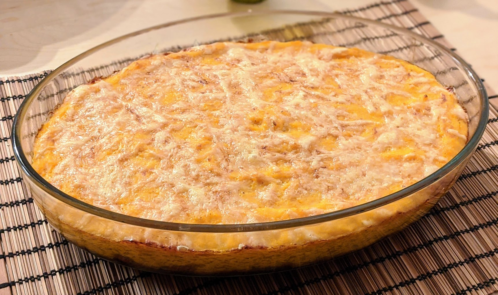

Gratin à la gloire de la divinité des Cucurbitacées

Pour trois personnes :
- Deux potimarrons, ou une doubeurre (courge butternut), ou un petit potiron bleu de Hongrie, ou une autre délicieuse cucurbitacée
- Quatre oignons
- 20cL de crème
- Deux œufs
- De l'emmental râpé, ou à râper
- Sel, poivre, noix de muscade
- Éplucher et couper la courge en gros bouts, et les faire cuire dans de l'eau bouillante salée jusqu'à ce que ça soit facile de planter une fourchette dedans (typiquement, ça prend une bonne vingtaine de minutes).
- Pendant ce temps, éplucher et couper les oignons en bouts, et les faire caraméliser dans une poêle avec de l'huile d'olive. C'est pareil que faire cuire des oignons normalement, sauf qu'on continue à les cuire une fois qu'ils sont translucides. Quand ils commencent à devenir bruns et à attacher, mettre un tout petit peu d'eau (ou de vin blanc) dans la poêle pour déglacer, mélanger et continuer à faire cuire jusqu'à ce que tout soit bien brun. Ça prend une bonne demi-heure.
- Pendant ce temps, battre les œufs avec la crème. Saler, poivrer, muscader, faire préchauffer un four à 180°C.
- Faire égoutter les morceaux de courge, les mélanger avec les œufs et la crème, et écraser le tout à la fourchette.
- Beurrer un moule, mettre au fond les oignons caramélisés, recouvrir de purée, et parsemer d'emmental râpé.
- Enfourner pendant une bonne demi-heure, voire 45 minutes (il faut que l'emmental sur le dessus prenne une jolie couleur). Déguster chaud, en rendant hommage à la divinité des Cucurbitacées.
Retour à la liste des recettes